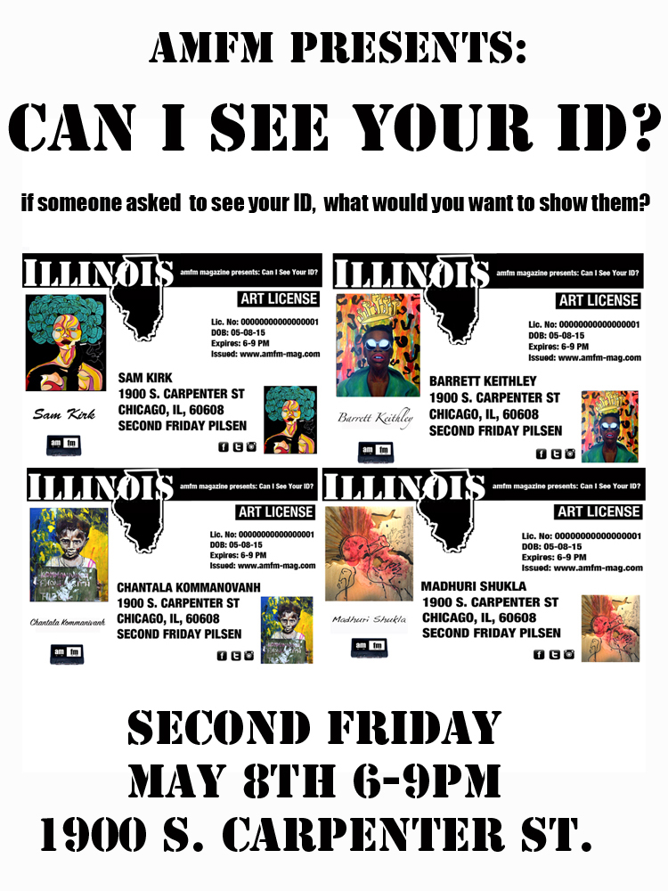

As a young boy interested in art, poetry and vibrant colors, Barrett Keithley struggled not only with his identity, but also with his role as an artist as a young boy growing up in the Wild Hundreds, an area on the south side of Chicago known for its violent reputation. He fueled this privately into his writing and painting growing up. It wasn’t until he was much older that he began to truly cultivate his craft...[read more]
IN ARTS: Sam Kirk
For Sam Kirk, the word artist encompasses many things. With a background in design, and a decade of advertising experience, art wasn’t too far off of the spectrum. She wears quite a few different hats, including painter, muralist, designer, interior designer, provocateur, and conversationalist to name a few. Her work, thematically, deals largely with cultural and societal narratives and causes in regards to...[read more]
IN MUSIC: Ace Da Vinci
Ace Da Vinci makes music to get high to. All drugs aside, despite the fact that his album “SEVENDAYHIGH” comes out on the popular stoner holiday 4/20, the music itself will leave you with an everlasting feeling that will take you through the motions of being hype, chill, inspired and motivated from his wide range of talented bars and knowledge dropped. Music can be...[read more]
IN FASHION: Sometimes the best ideas are born when you least expect it. At least that’s what happened for Shane Vitaly Foran when he went backpacking in Bali. Soul searching, surfing and seeking sanity, he found inspiration in the local artisanal jewelry markets of Bali and the hand crafted expertise of the skilled craftsmen. Foran sought for a way to connect the expertise and style...[read more]
IN REVIEWS: Jessie Ware at Metro Chicago
The lights dimmed and Ware sauntered onto the stage in all black smiling and waving at the screaming crowd before taking the microphone and belting out the first songs of her Tough Love Tour, “Running,” and Champagne Kisses.” Ware has got some loyal fans who have followed her rise to fame, from her early beginnings playing at Lincoln Hall, to the sold out...[read more]IN EVENTS:
